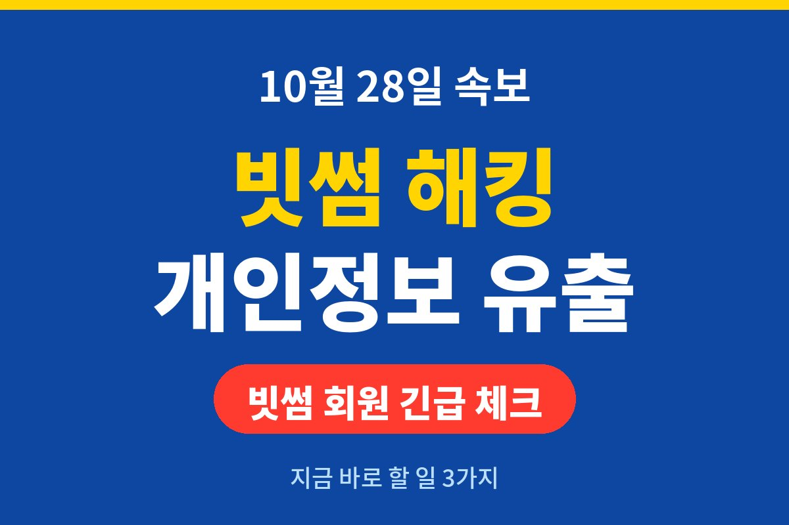
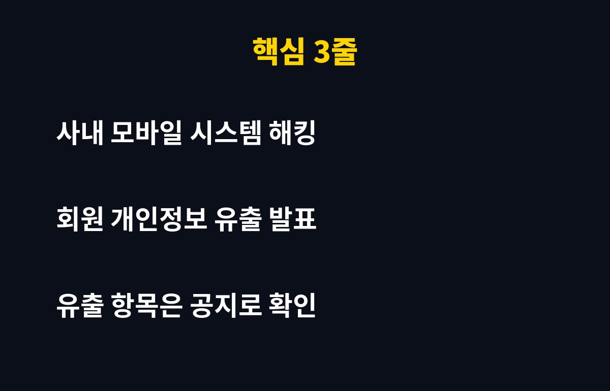
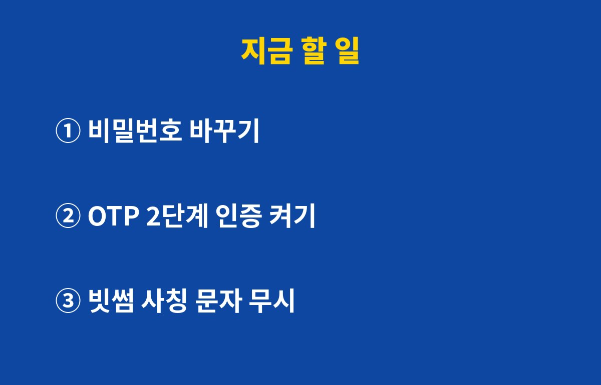

빗썸 개인정보 유출이 오늘(10월 28일) 공식 확인됐습니다. 빗썸이 "사내 모바일 시스템이 해킹당해 개인정보가 유출됐다"고 직접 밝혔거든요.
빗썸 계정이 있다면 코인이 바로 사라지는 건 아니어도, 진짜 위험은 지금부터예요. 유출된 정보로 날아오는 '빗썸 사칭 문자'와 계정 공격, 이걸 어떻게 막느냐가 관건이죠.
지금까지 확인된 건 딱 이겁니다. 공격받은 곳은 고객이 쓰는 거래 앱이 아니라 빗썸 직원들이 쓰는 사내 모바일 시스템이고, 이 경로로 개인정보가 빠져나갔다는 것.
어떤 항목(이름, 전화번호, 이메일 등)이 몇 명분 유출됐는지는 아직 확실히 나온 게 없어요. 그래서 떠도는 숫자를 믿기보다 빗썸 앱 공지사항과 개별 안내 문자·메일을 직접 확인하는 게 제일 정확합니다.
참고로 '사내 시스템'은 회사 직원용 업무 프로그램을 말해요. 고객 지갑과는 분리돼 있는 경우가 많지만, 직원 계정은 고객 정보를 조회할 권한이 있어서 해커들이 노리는 1순위 문이거든요.
개인정보 유출 사고에서 진짜 피해는 대개 2차 공격에서 나옵니다. 내 이름과 번호를 아는 사기범이 "빗썸 고객센터입니다, 유출 피해 보상 신청하세요" 하고 링크를 보내면? 솔직히 깜빡 속기 딱 좋죠.
링크를 누르면 가짜 로그인 화면이 뜨고, 거기에 아이디·비밀번호·인증번호를 넣는 순간 계정이 넘어갑니다. 빗썸 개인정보 유출 소식이 퍼진 오늘부터 며칠이 가장 위험한 시기예요.

| 할 일 | 어디서 | 왜 |
|---|---|---|
| ① 비밀번호 변경 | 빗썸 앱 → 마이페이지 → 보안 설정 | 다른 사이트와 같은 비번이면 연쇄로 털림 |
| ② 2단계 인증(OTP) 켜기 | 빗썸 앱 보안 설정 | 비번이 새도 로그인 한 번 더 막아 줌 |
| ③ 사칭 문자·전화 무시 | 문자 속 링크 절대 클릭 금지 | 공지는 앱 안에서만 확인 |
메뉴 이름은 앱 버전에 따라 조금 다를 수 있어요. 핵심은 "비번 바꾸고, 인증 하나 더 걸고, 문자는 의심부터". 이 세 개면 대부분의 2차 피해는 막힙니다.
같은 비밀번호를 은행·이메일·쇼핑몰에도 쓰고 있다면 그쪽도 오늘 같이 바꾸세요. 해커들은 한 곳에서 얻은 정보로 다른 사이트 문을 하나씩 두드려 보거든요.
유출된 개인정보로 내 이름의 휴대폰이 몰래 개통되는 일도 있어요. 한국정보통신진흥협회가 운영하는 엠세이퍼(M-Safer)에서 내 명의로 개통된 휴대폰을 조회하고, 신규 가입 제한도 걸 수 있습니다.
이상한 결제 문자나 모르는 기기 로그인 알림이 오면 바로 빗썸 앱 안 공식 고객센터로 신고하고, 필요하면 개인정보 침해 신고센터(국번 없이 118)에서도 상담받을 수 있어요.

이번 빗썸 개인정보 유출은 이제 막 발표된 사건이라, 유출 규모와 보상 방안은 앞으로 추가로 나올 가능성이 큽니다. 새 소식이 나오면 이 블로그에서 후속으로 정리해 드릴게요.
여러분은 거래소 비밀번호, 마지막으로 바꾼 게 언제인가요? 기억이 안 난다면… 오늘이 그날입니다.
IT 사고·보안 소식 가장 빨리 받아보려면 구독해 두세요!
기사·공식 발표 기준이며 출시·가격 정보는 바뀔 수 있어요.